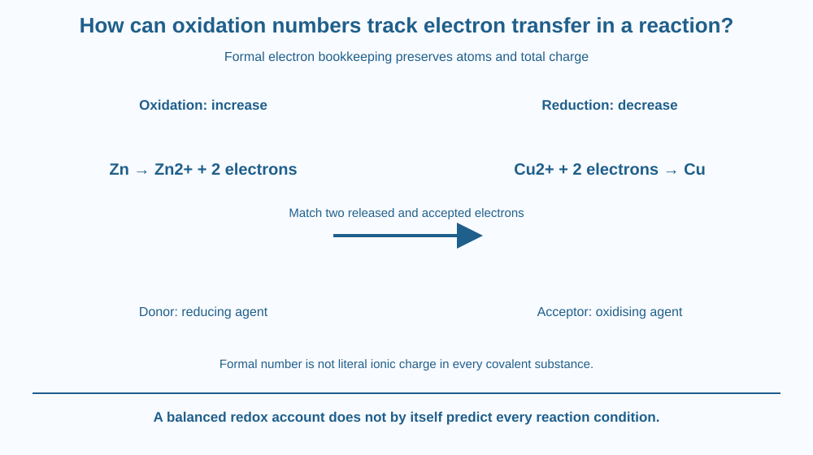

Use oxidation numbers as a formal accounting tool for redox changes. Identify oxidation as an increase and reduction as a decrease, then balance transferred electrons. Distinguish a bookkeeping number from an atom's literal charge in every chemical bond.
A reaction equation can show new substances without making the electron-transfer account obvious. Chemists assign oxidation numbers to follow changes in a consistent way.
These numbers are not coloured marks physically attached to atoms. They are a convention that helps identify which element's assigned electron ownership changes between reactants and products.
The useful question is how to make the account balance, not merely whether a reaction changed colour or involved oxygen. That focus keeps this lesson distinct from earlier reaction indicators and corrosion examples.
An oxidation number is a formal assignment based on rules for distributing bonding electrons. For a monatomic ion, it matches the ion's charge. In covalent substances, it need not equal the atom's actual electrical charge.
An element in its uncombined form has oxidation number zero. A simple ion such as zinc two-plus has oxidation number plus two. The sum of oxidation numbers equals the total charge of the species.
Oxidation is an increase in oxidation number. Reduction is a decrease. In an electron-transfer account, oxidation releases electrons and reduction accepts them. The two processes occur together in the complete redox reaction.
For a paper example, zinc goes from Zn to Zn2+ plus two electrons. Its oxidation number changes from zero to plus two. A copper two-plus ion can be represented as accepting two electrons to form uncombined copper, changing from plus two to zero.
The electron counts must balance when the half-reactions are combined. Two electrons released in one account match two accepted in the other. Electrons are not created or lost from the complete accounting simply because they appear on opposite sides of separate half-equations.
The reducing agent supplies electrons in this description and is itself oxidised. The oxidising agent accepts them and is reduced. The names describe what each does to the other participant, which is why they can initially feel reversed.
Common rule patterns help with compounds, but exceptions matter. Oxygen is often assigned minus two, yet peroxide is a familiar exception. A reliable method checks the species and total charge rather than applying one memorised value blindly.
Oxidation numbers do not by themselves predict whether an arbitrary reaction will occur under particular conditions or how fast. The lesson teaches bookkeeping, while relative reactivity and kinetic questions require additional information. No real metal-salt experiment is part of the activity.
Draw two accounts with electron tokens moving from one participant to another. Mark an increase in oxidation number on the donor and a decrease on the receiver.
Keep the token total balanced. If one half-reaction produces more electrons than another consumes, multiply the appropriate half-equations before combining them. The mathematical scaling preserves both atoms and charge.
Add a label saying formal assignment beside a covalent example. This prevents the token model from claiming that every bond contains fully transferred electrons in exactly the way the bookkeeping assumes. A useful convention can reveal change without being a literal microscopic picture of all charge distribution.
The SVG shows zinc's zero-to-plus-two account and copper's plus-two-to-zero account, joined by a two-electron transfer marker. Opposite oxidation-number changes are highlighted separately.
A lower strip distinguishes formal number from literal atomic charge in every substance. Another label identifies the agent names according to their role in the partner's change.
The diagram uses symbolic equations only. It does not show apparatus, an electrical circuit or instructions to mix chemicals. Its target is redox accounting rather than an experimental displacement prediction or a repeat of corrosion chemistry.

Redox language appears in many chemical descriptions, from material processing to biological chemistry. The same bookkeeping idea can organise very different reactions, but each actual process has additional conditions and mechanisms.
In school work, a balanced electron account helps check an equation more specifically than saying a substance gained oxygen. Some redox reactions can be described without oxygen being the central participant.
Students should not mix metal salts, household cleaners or unknown substances to test this lesson. The paper account supplies the required science without a practical chemical procedure or claims about current industrial operating conditions.
Use paper, a pencil and two drawn electron tokens.
Check atom labels and total charge as well as the numbers. The tokens are an accounting model, not loose electrons students should attempt to produce or handle. Add a note distinguishing oxidation-number rules from a prediction of every reaction's feasibility.
Why can an oxidising agent be reduced itself? Explain the name through what it causes the partner to do rather than treating it as the name of its own change.
Now consider a covalent molecule. Why should a formal oxidation number not automatically be interpreted as a complete ionic charge physically residing on that atom? The convention deliberately simplifies electron assignment for a useful purpose.
What indicates oxidation in oxidation-number bookkeeping?
Answer: C — Oxidation corresponds to an increase in the formal oxidation number.
Why must electrons cancel in the combined half-equation account?
Answer: A — The complete electron-transfer account preserves charge rather than creating unmatched electrons.
An atom in a covalent substance has an assigned oxidation number. What should you avoid assuming?
Answer: B — Oxidation numbers are formal assignments and need not equal actual local electrical charge.
Make a redox-accounting card with the starting and ending oxidation numbers, half-equations, matched electron count and agent roles. Use the supplied zinc-copper paper example.
Include one exception warning for a common oxidation-number rule and one limitation about reaction prediction. Do not turn the card into a real mixing instruction. Your conclusion should show what the bookkeeping establishes and what it leaves for other chemistry.
A formal number can be useful without being a literal measured charge. Oxidation numbers make electron changes countable across complex formulas. Recognising their conventional nature strengthens the tool because it prevents the account from being mistaken for a complete picture of bonding.
Oxidation numbers track formal electron changes: increases indicate oxidation, decreases reduction, and the complete redox account must balance transferred electrons and charge.